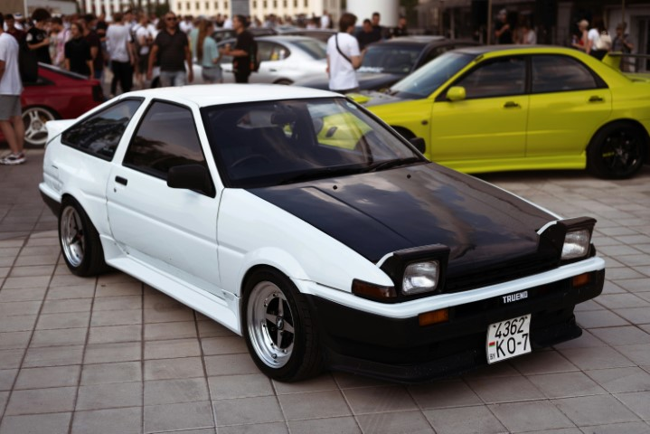

JDM (Japanese Domestic Market)
cars have shaped the automotive world with their innovative engineering,
racing pedigree, and cultural impact. These machines, built with
precision and passion, have dominated the streets, tracks, and pop
culture for decades.
From the twin-turbocharged monsters to lightweight drift icons, JDM cars
are more than just vehicles—they are a lifestyle. Whether it’s the
unmatched speed of the Nissan GT-R, the legendary tuning potential of
the Toyota Supra, or the drift king Toyota AE86, each of these cars
holds a unique place in history.
Explore the Legends Below, you’ll find five of the most iconic JDM cars
that have left their mark on enthusiasts worldwide. Click on any of them
to learn about their history, performance, and appearances in movies,
games, and anime.
üèÅ Ready to dive into the world of JDM? Click on a legend and start
exploring!

Nissan GT-R

Toyota AE86

Mazda RX-7

Toyota Supra

Mitsubishi Lancer Evo
A Tribute to Automotive Culture While we've featured some of the most
iconic JDM cars in this project, it's important to note that the world
of cars is vast and diverse. There are countless legends from different
cultures and regions BMW, Mercedes, Chevrolet, Ford Mustang, and many
others that have had an equally profound impact on the automotive world.
However, our love for cars like these transcends borders and brands.
It’s about the passion, performance, and memories they create, whether
on the streets, tracks, or in the hearts of enthusiasts. This site is a
humble tribute to the JDM spirit, but we recognize that the automotive
culture is an ever-expanding universe that continues to inspire and
excite drivers around the globe.